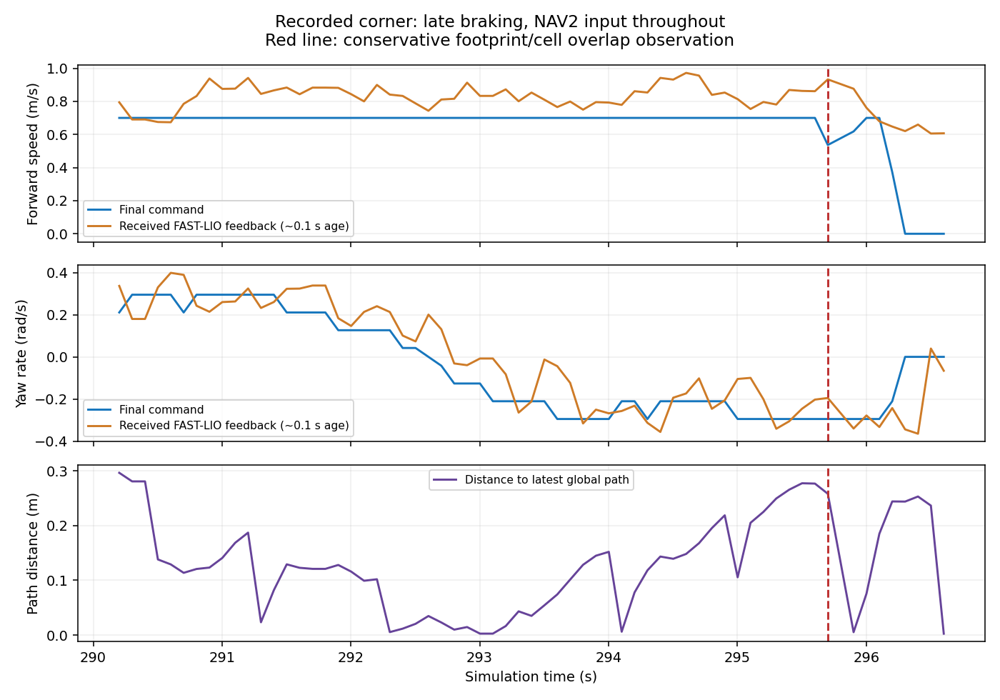

2026-10-27 · FAST-LIO velocity 입력 / DWB lateral model 변경 후 기록
simulation 290.202~296.602초, 중복 시각을 제외한 64개 관측에서 정책 입력은 모두 NAV2였습니다. 0.7m/s 전진과 약 −0.295rad/s yaw가 유지되다가 뒤늦게 감속했습니다. 이 명령의 회전 반경 v/|ω|는 약 2.37m입니다. 더 작은 반경으로 돌려면 전진을 줄이거나 충분한 yaw 응답이 필요합니다.

295.902초 기록에서 명령 vx=0.618m/s, 수신 속도 vx=0.876m/s였고, 보수적인 footprint/cell 교차 검사에서 겹침이 관측됐습니다. 296.302초에는 0 명령과 수신 vx=0.620m/s가 함께 기록됐습니다. 입력 지연 약 0.1초와 TF 지연 약 0.2초가 있으므로 실제 접촉 시각·제동거리를 확정한 결과는 아닙니다. controller의 No valid trajectories는 3회 관측됐습니다.
마지막 collision_cloud_timeout은 센서/clock 갱신이 멈춘 뒤 기록됐습니다. 이것을 앞선 코너 실패 원인과 혼동하면 안 됩니다. 좌우 속도 예측 계수 수정은 코너 감속 규칙을 추가하는 변경이 아닙니다.
controller: 공식 Humble RegulatedPurePursuitController desired_linear_vel: 0.7 regulated_linear_scaling_min_radius: 1.2 regulated_linear_scaling_min_speed: 0.05 use_regulated_linear_velocity_scaling: true use_cost_regulated_linear_velocity_scaling: true use_collision_detection: true
곡률 제한만 적용하면 회전 반경 0.6m에서 약 0.35m/s, 0.3m에서 약 0.175m/s를 요청합니다. 장애물 근접·목표 접근은 추가 감속을 만들 수 있습니다. 공식 RPP도 로봇의 전체 동역학이나 보행 정책 응답을 모델링하지 않으므로 실제 급회전 검증이 필요합니다.
trial 전용 config/rpp.yaml을 추가했습니다. 현재 실행 중인 DWB는 교체하지 않았습니다. 같은 FAST-LIO 속도 입력, 지도, footprint, collision chain을 유지하며 controller:=rpp로 다음 navigation을 시작할 수 있습니다. RPP는 새 우회 경로를 직접 탐색하지 않습니다. Height planner가 path not found로 실패하는 문제는 별개로 남습니다.